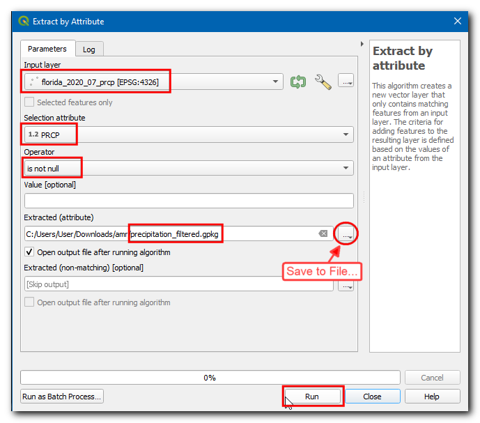
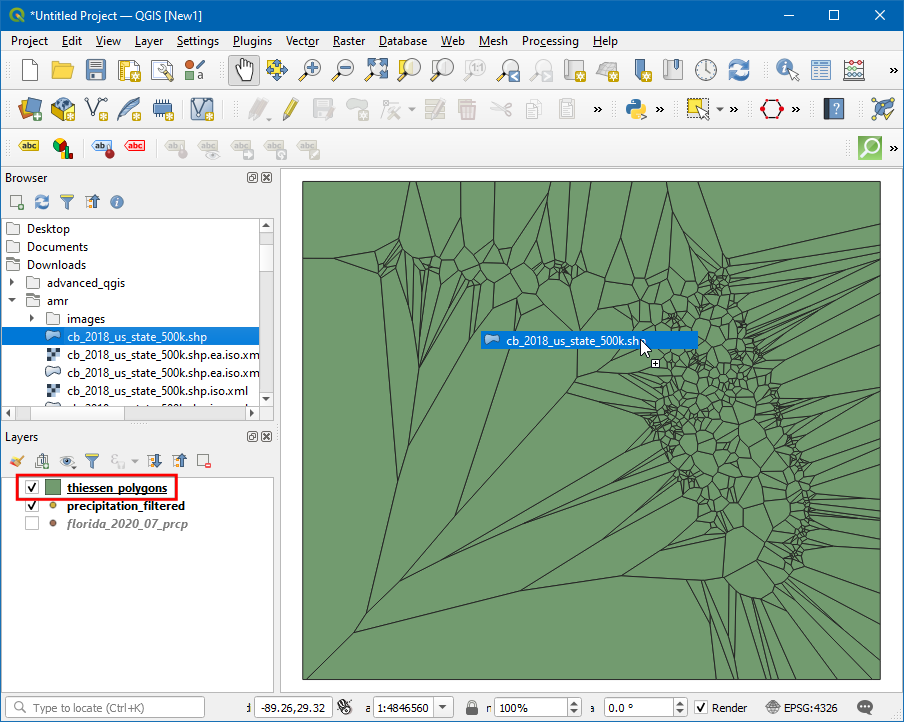
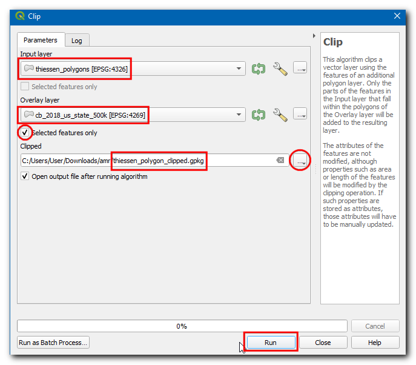
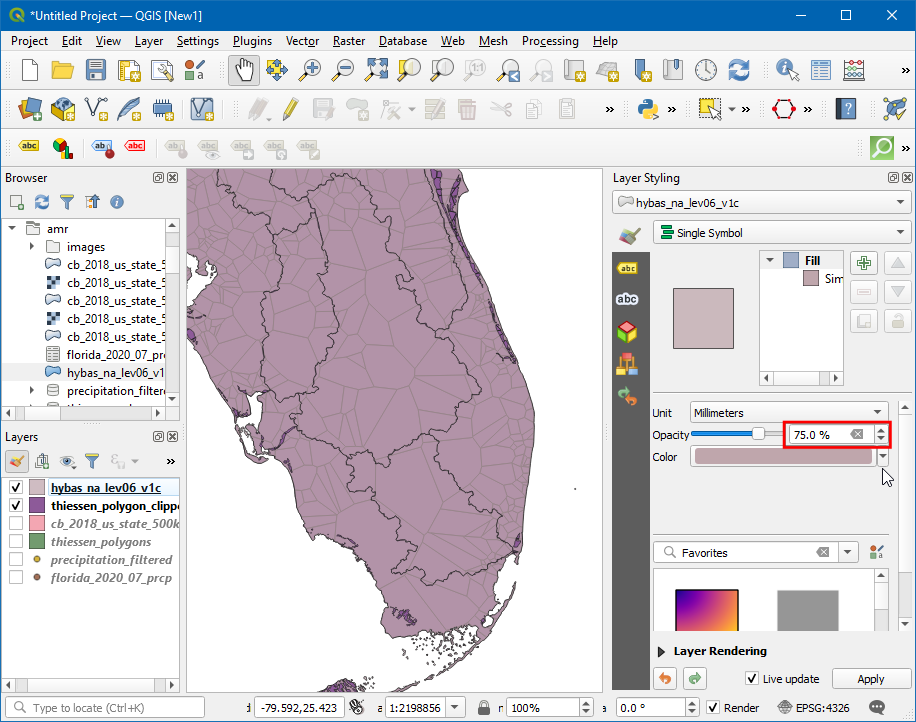
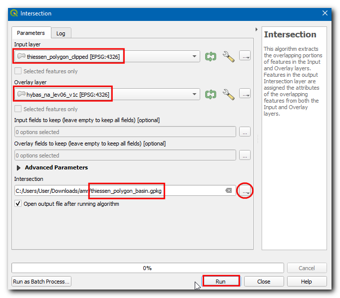
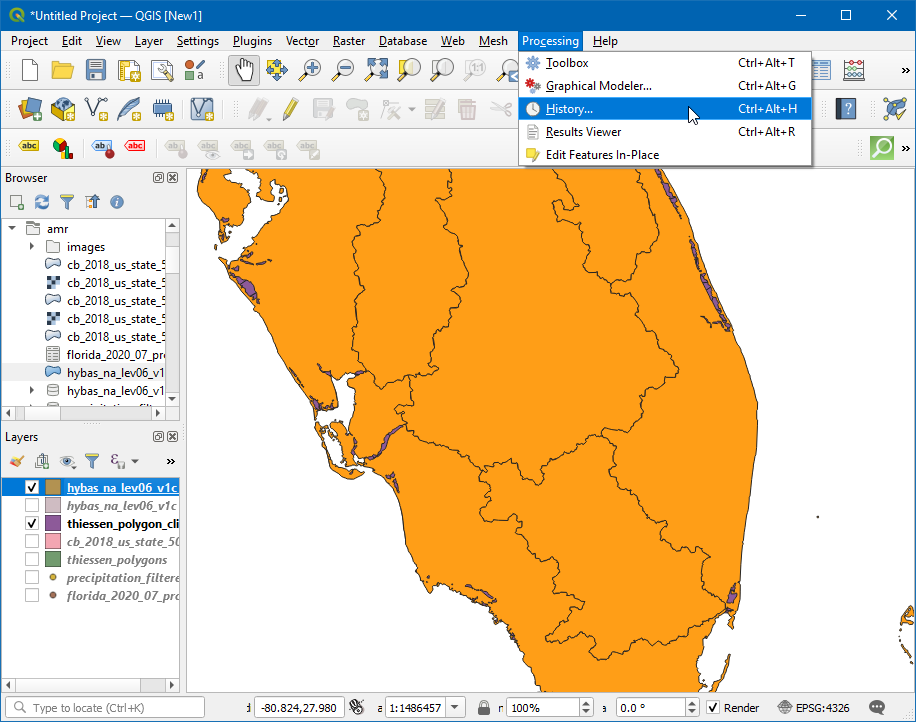

Ujaval Gandhi
Ujaval GandhiCalculating Areal Mean Rainfall (QGIS3)¶
Calculation of water balance, flood modeling, runoff forecasting, climate studies etc. often need the average depth of rainfall in a hydrological basin as an input - which is also called Areal Precipitation or Areal Mean Rainfall (AMR).
AMR calculation can be done using rain gauge data. By using the rain gauge location and observed precipitation, one can estimate the average precipitation at a given location by using any of the following techniques:
Arithmetic Average: One can simply take an average of all the observed values. This method assumes that the rainfall field is homogeneous and that the rain gauge observations are independent and give equal weight to all rain gauges.
Thiessen Polygon: This method divides the area using Thiessen polygons with the assumption that rainfall is homogeneous within the coverage area of each station. This method is also called an area-weighted average. These assumptions are fine for low-lying or flat terrain, but not suitable for mountainous terrain.
Iso-hyetal Method: This interpolation technique calculates Isohyets - lines joining equal precipitation. It assumes that rainfall between 2 isohyets is homogeneous. This method is suitable when the rain-gauge network is dense.
Distance Weighting/Gridded - This is an interpolation technique where a raster grid is created and a value for each pixel is estimated based on the distance to stations. Once the grid points have all been estimated they are summed and the sum is divided by the number of grid cells to obtain the areal mean precipitation.
Geostatistical Methods: Rainfall is strongly influenced by local factors - such as elevation. Using multivariate regression or Kriging techniques, one can account for spatial autocorrelation and can achieve better accuracy. These methods are suited when the distribution of the rain gauge station is uniform and dense.
In this tutorial, we will learn the QGIS workflow to calculate Areal Mean Rainfall using the Thiessen Polygon method.
Overview of the task¶
In this tutorial, we will take the precipitation measured by the Global Historical Climatology Network (GHCN) stations and compute Areal Mean Rainfall in each Hydrological basin in the state of Florida.
Other skills you will learn¶
How to remove data with Null values.
How to fix invalid geometries in a layer.
How to check your Processing History and re-run a tool with the same parameters.
How to dissolve polygons and summarize statistics.
How to use only selected features in Processing algorithms.
Get the data¶
We will use NOAA Climate data , HydroSHEDS and US Census Bureau Cartographic Boundary data layers.
Station-wise Precipitation¶
Go to NOAA Climate data website. Click on the Search tool.

Select
Global Summary of the Monthin Select weather Observation Type/Dataset, then in Select Date Range choose July 2020, in Search For selectStates, in Enter a Search Term typeFlorida. Click Search.

Click Add To Cart, in items click View Items.

Switch to Custom Global Summary of the Month CSV, click Continue.
Check the Geographic Locations and in Select data types for custom output expand
PrecipitationselectPrecipitation (PRCP). Click Continue.

Enter the mail address and click SUBMIT ORDER to Download the data.

Hydrological Basins¶
Go-to HydroSHEDS website and click Download.

Select

Enter the mail address and click Submit Request to Download the data.

State Boundaries¶
Visit the Cartographic Boundary Files - Shapefile page. Download the cb_2018_us_state_500k.zip file from the States section.
For convenience, you may directly download a copy of all the datasets from the links below:
Data Sources: [GHCN], [HYDROSHEDS], [USCENSUS]
Procedure¶
Open QGIS and click on the Open Data Source Manager.

In the Data Source Manager dialog box, switch to Delimited Text. Click on the
…in File name then browse and select theflorida_2020_07_prcp.csvfile.

Now, under Geometry Definition choose Point coordinates, X field and Y field should be Longitude and Latitude respectively. Choose the Geometry CRS as EPSG 4326 - WGS 84. Click Add.

Now a new point layer will be added, click on the Open Attribute Table icon.

In the Attribute table the field PRCP represents the amount of precipitation in the station during the July 2020. Also, this data is recorded in inches. Note there are few
Nullvalues which can cause problems during calculation. Sort the PRCP column, and you would see there is only a small fraction of the dataset is Null. We will now remove the stations with Null values.

Open the Processing Toolbox by going to , and search and locate the algorithm.

In the Extract by Attribute dialog box, Select the Input layer as
florida_2020_07_prcp, then choosePRCPin Selection attribute, thenis not nullin Operator. Click on the…next to Extracted (attribute), choose Save to File…, enter the layer name asprecipitation_filtered.gpkgand click Run.

Now a new layer is added to canvas, turn off the older layer, and you can see the stations with Null values have been removed.

Now we will generate thiessen polygons from this layer. Open the processing toolbox by going to , and search and locate the algorithm.

Σημείωση
Thiessen polygons represent the area of influence around each point. Every polygon defines the area which is closer to a particular station than any other station. This means the precipitation at any point is assumed to be the same as the nearest station.
Select
precipitation_filteredas the Input layer. Since we do not have data for any rain-gauge stations outside the basin boundary, we can add some buffer area. Enter15as the Buffer region (% of extent). Click on the…in Voronoi polygons and select Save to File…, then enter the name asthiessen_polygons.gpkg. Click Run.

A new layer
thiessen_polygonswill be added to canvas. Let’s clip this layer to the state boundary. Search forcb_2018_us_state_500k.shpfile in Browser and drag it to canvas.

The states layer is in a different CRS than the Project CRS. You will get a prompt with different options for transforming this CRS to the Project CRS. In Select Transformation Dialog box, you can choose the default transformation and click OK.
We will now clip the
thiessen polygonslayer to the Florida state boundary. Click on the Select Feature by area or Single Click icon and click over Florida state.

Open the Processing Toolbox by going to , and search and locate the algorithm.

In the Clip dialog box, select the Input layer as
thiessen_polygons, in the Overlay layer select thecb_2018_us_state_500K layerand check the Selected features only checkbox, then click on the…in Clipped and select Save to File… , then enter the name asthiessen_polygons_clipped.gpkg. Click Run.

The clipped thiessen polygons layer
thiessen_polygons_clippedwill be added to the canvas. Turn-off the visibility of all other layers. As our task is to calculate average rainfall over each basin, we will now load the polygons representing basins. Locate thehybas_na_lev06_v1c.shplayer from the Browser and add it to the canvas.

You will notice that each basin is covered by many thiessen polygons and each polygon spans multiple basins. To visualise this Open layer styling panel icon and change the Opacity to
75%. We will now intersect both the layers to cut the thiessen polygons to the boundary of each basin.

Open the Processing Toolbox by going to , and search and locate the algorithm.

In the Intersection dialog box, select the Input layer as
thiessen_polygons_clippedand Overlay layer ashybas_na_lev06_v1c, then click on the…in Intersected and select Save to File… , then enter the name asthiessen_polygons_basin.gpkg. Click Run.

The execution will fail with an error message has invalid geometry. Please fix the geometry or change the Processing setting to the “Ignore invalid input features” option.. You can learn more about this error in the Handling Invalid Geometries (QGIS3) tutorial.

To fix the geometries, open the Processing Toolbox by going to , and search and locate the algorithm.

In the Fix Geometries dialog box select the Input layer as
hybas_na_lev06_v1cand click on…on Fixed geometries and select Save to File…, enter the file name ashybas_na_lev06_v1c_fixed.gpkgand click Run.

Now a new layer will be added to canvas. We can now try the intersection again. Instead of running the tool from scratch and filling all the parameters, we can retrieve the pre-filled dialog from Processing History and modify only the Overlay layer. Click .

Double-click on the native:intersection algorithm from the list.

Change the Overlay layer to
hybas_na_lev06_v1c_fixedand click Run.

Now a new layer will be loaded, and you can see the
thiessen_polygons_basinis clipped based on the basin boundary.

Now, let’s calculate the average rainfall value from the thiessen polygons for each basin. This is done using the Aggregate tool which allows us to dissolve individual polygons while calculating statistics on the attribute values. Now, open the Processing Toolbox by going to , and search and locate the algorithm.

In the Aggregate dialog box choose Input layer as
thiessen_polygons_basin, select all fields exceptPRCPandHYBAS_IDand click Delete selected field.

In Group by expression select
HYBAS_ID. This means that the tool will dissolve all polygons that have the same value ofHYBAS_ID. In our case, these will be all thiessen polygons falling a basin. In the Aggregates section, we can configure how different field values will be aggregated from all polygons that gets dissolved. For PRCP, click on the expression button to enter the below expression. The expression calculates the area-weighted fraction for each polygon. Set the Aggregate Function tosum, which will sum up all the area-weighted fractions resulting in the area-weighted mean. For HYBAS_ID, change the Aggregate Function tofirst_value. Since we are grouping all thiessen polygons by their HYBAS_ID, all the values will be the same and the first_value function will use the attribute value from the first polygon in each basin. Click on…on Aggregated and select the Save to File…, enter the file name asareal_mean_rainfall.gpkgand click Run.
(PRCP * $area) / sum($area)
A new layer will be added to canvas, lets open the Attribute table to explore. Click on the Open Attribute Table icon.

The field PRCP contains the areal mean rainfall for each basin in inches.

If you want to give feedback or share your experience with this tutorial, please comment below. (requires GitHub account)